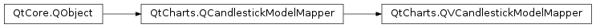

QtCharts.QVCandlestickModelMapper¶
Note
This class was introduced in Qt 5.7.
Synopsis¶
Functions¶
- def
closeRow() - def
firstSetColumn() - def
highRow() - def
lastSetColumn() - def
lowRow() - def
openRow() - def
setCloseRow(closeRow) - def
setFirstSetColumn(firstSetColumn) - def
setHighRow(highRow) - def
setLastSetColumn(lastSetColumn) - def
setLowRow(lowRow) - def
setOpenRow(openRow) - def
setTimestampRow(timestampRow) - def
timestampRow()
Signals¶
- def
closeRowChanged() - def
firstSetColumnChanged() - def
highRowChanged() - def
lastSetColumnChanged() - def
lowRowChanged() - def
openRowChanged() - def
timestampRowChanged()
Detailed Description¶
-
class
PySide2.QtCharts.QtCharts.QVCandlestickModelMapper([parent=nullptr])¶ Parameters: parent – PySide2.QtCore.QObject
-
PySide2.QtCharts.QtCharts.QVCandlestickModelMapper.closeRow()¶ Return type: PySide2.QtCore.int
-
PySide2.QtCharts.QtCharts.QVCandlestickModelMapper.closeRowChanged()¶
-
PySide2.QtCharts.QtCharts.QVCandlestickModelMapper.firstSetColumn()¶ Return type: PySide2.QtCore.int
-
PySide2.QtCharts.QtCharts.QVCandlestickModelMapper.firstSetColumnChanged()¶
-
PySide2.QtCharts.QtCharts.QVCandlestickModelMapper.highRow()¶ Return type: PySide2.QtCore.int
-
PySide2.QtCharts.QtCharts.QVCandlestickModelMapper.highRowChanged()¶
-
PySide2.QtCharts.QtCharts.QVCandlestickModelMapper.lastSetColumn()¶ Return type: PySide2.QtCore.int
-
PySide2.QtCharts.QtCharts.QVCandlestickModelMapper.lastSetColumnChanged()¶
-
PySide2.QtCharts.QtCharts.QVCandlestickModelMapper.lowRow()¶ Return type: PySide2.QtCore.int
-
PySide2.QtCharts.QtCharts.QVCandlestickModelMapper.lowRowChanged()¶
-
PySide2.QtCharts.QtCharts.QVCandlestickModelMapper.openRow()¶ Return type: PySide2.QtCore.int
-
PySide2.QtCharts.QtCharts.QVCandlestickModelMapper.openRowChanged()¶
-
PySide2.QtCharts.QtCharts.QVCandlestickModelMapper.setCloseRow(closeRow)¶ Parameters: closeRow – PySide2.QtCore.int
-
PySide2.QtCharts.QtCharts.QVCandlestickModelMapper.setFirstSetColumn(firstSetColumn)¶ Parameters: firstSetColumn – PySide2.QtCore.int
-
PySide2.QtCharts.QtCharts.QVCandlestickModelMapper.setHighRow(highRow)¶ Parameters: highRow – PySide2.QtCore.int
-
PySide2.QtCharts.QtCharts.QVCandlestickModelMapper.setLastSetColumn(lastSetColumn)¶ Parameters: lastSetColumn – PySide2.QtCore.int
-
PySide2.QtCharts.QtCharts.QVCandlestickModelMapper.setLowRow(lowRow)¶ Parameters: lowRow – PySide2.QtCore.int
-
PySide2.QtCharts.QtCharts.QVCandlestickModelMapper.setOpenRow(openRow)¶ Parameters: openRow – PySide2.QtCore.int
-
PySide2.QtCharts.QtCharts.QVCandlestickModelMapper.setTimestampRow(timestampRow)¶ Parameters: timestampRow – PySide2.QtCore.int
-
PySide2.QtCharts.QtCharts.QVCandlestickModelMapper.timestampRow()¶ Return type: PySide2.QtCore.int
-
PySide2.QtCharts.QtCharts.QVCandlestickModelMapper.timestampRowChanged()¶
© 2018 The Qt Company Ltd. Documentation contributions included herein are the copyrights of their respective owners. The documentation provided herein is licensed under the terms of the GNU Free Documentation License version 1.3 as published by the Free Software Foundation. Qt and respective logos are trademarks of The Qt Company Ltd. in Finland and/or other countries worldwide. All other trademarks are property of their respective owners.